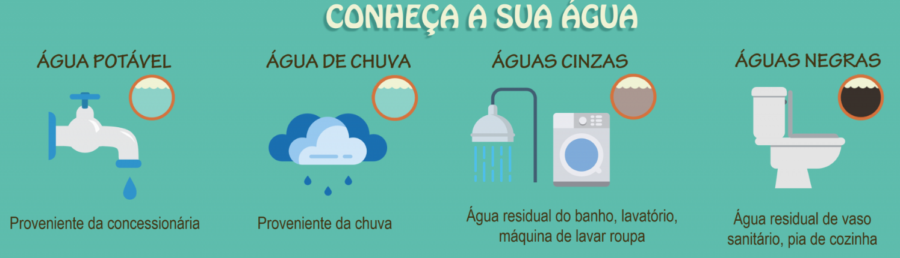

Reutilização da água
A água cinzenta ou água cinza é a água que foi utilizada na máquina de lavar, pia, banheira ou chuveiro. Ela pode ser facilmente tratada e reciclada. A chamada água negra é a usada em vasos sanitários ou que contém algum tipo de coliforme fecal.

Nos países desenvolvidos, o conceito de reutilizar água é antigo e está bem estabelecido, mas em outras nações, em que as pessoas consideram a água como abundante, ela é usada uma vez e jogada fora. Para estimular o uso de sistemas de reuso de águas cinzas faz-se necessário verificar a qualidade dessas águas e adequá-la aos usos previstos. As águas cinzas devidamente tratadas podem ser utilizadas no consumo não-potável em edificações tais como em bacias sanitárias, em torneiras de jardins, na irrigação de gramados e plantas, na lavagem de veículos, na limpeza de calçadas, na limpeza de pátios, na produção de concreto, na compactação de solos e usos ornamentais como em chafarizes e em espelhos d’água de modo que sua utilização não ofereça riscos à saúde de seus usuários